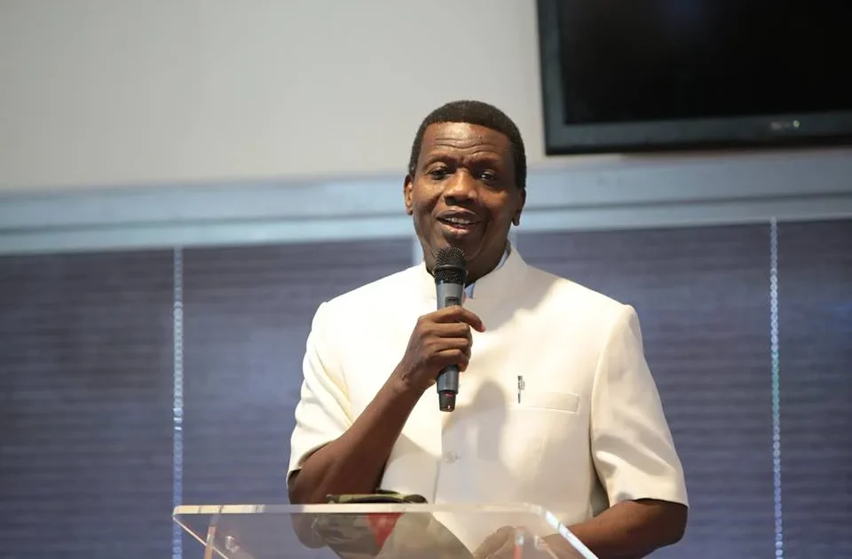

Security & Crime · 10 Nov 2026
Oil wells: RCCG pastor dismisses allegations against Adeboye, demands evidence

The Continental Overseer (South West, Nigeria & Middle East) of the Redeemed Christian Church of God, Johnson Odesola, has defended the church’s General Overseer, Pastor Enoch Adeboye, over… Read More: https://punchng.com/oil-wells-rccg-pastor-dismisses-allegations-against-adeboye-demands
Multiple independent publishers are reporting on the same development: Oil wells: RCCG pastor dismisses allegations against Adeboye, demands evidence.
The available reports place the development in the Security & Crime category. The accounts were compared for agreement on the central event rather than simply shared names or broad topics.
One of the available reports describes the development this way: The Continental Overseer (South West, Nigeria & Middle East) of the Redeemed Christian Church of God, Johnson Odesola, has defended the church’s General Overseer, Pastor Enoch Adeboye, over… Read More: https://punchng.com/oil-wells-rccg-pastor-dismisses-allegations-against-adeboye-demands-evidence/
Readers should consult the linked source reports for additional context, updates and details that may change as the story develops.
Sources
This article was produced by the C. O. Eric AI Newsroom from the cited sources. It is published only after automated evidence and safety checks.